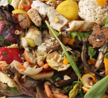
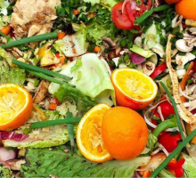
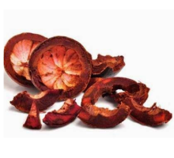
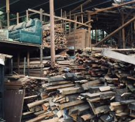

Pemilahan sampah Organik

01
Sisa Makanan
Sisa makanan: bahan organik berupa sisa-sisa makanan / bahan dapur yang dibungkus dalam plastik dan mudah terurai.

02
Daun Kering
Sisa sayuran: limbah dapur dari bagian sayuran yang tidak terpakai, seperti batang dan kulit, dikemas dalam kantong sampah.

03
Sisa Sayuran
Daun kering: sampah alami dari dedaunan yang gugur, dikumpulkan dalam karung atau tumpukan di halaman.

04
Kulit Buah
Kulit buah: limbah dari bagian luar buah, seperti kulit jeruk atau pisang, yang biasanya dibuang bersama sisa organik lainnya.

05
Kayu
Kayu: limbah pohon berupa potongan kayu bekas atau ranting, dimanfaatkan untuk bahan bakar atau kerajinan.